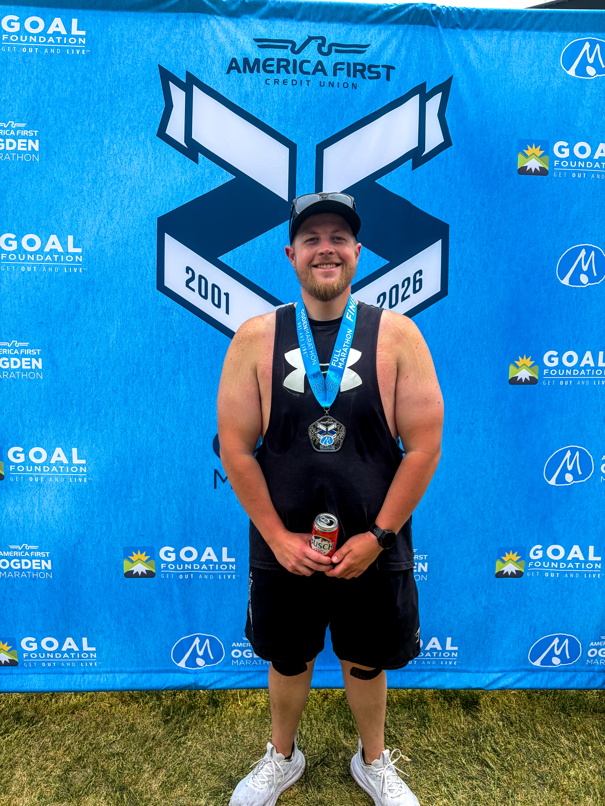
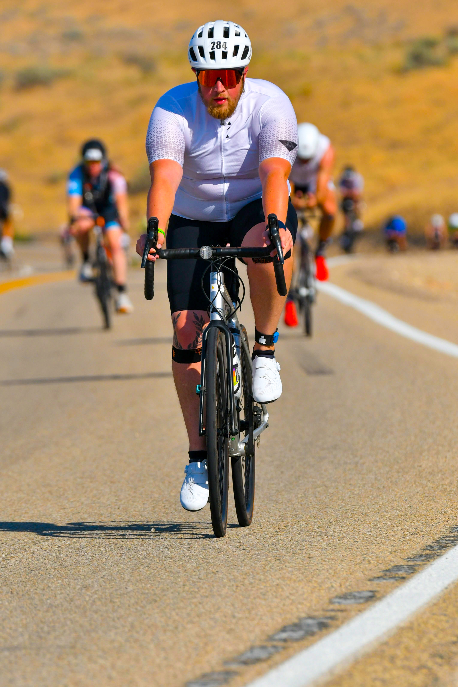
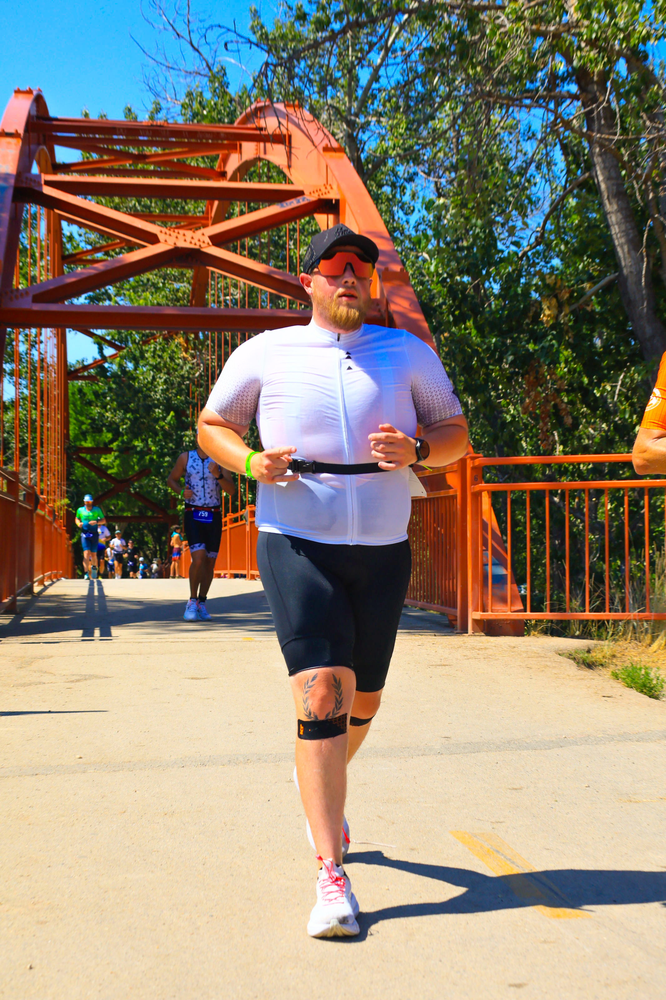
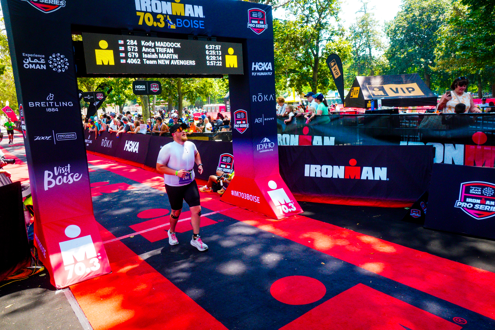
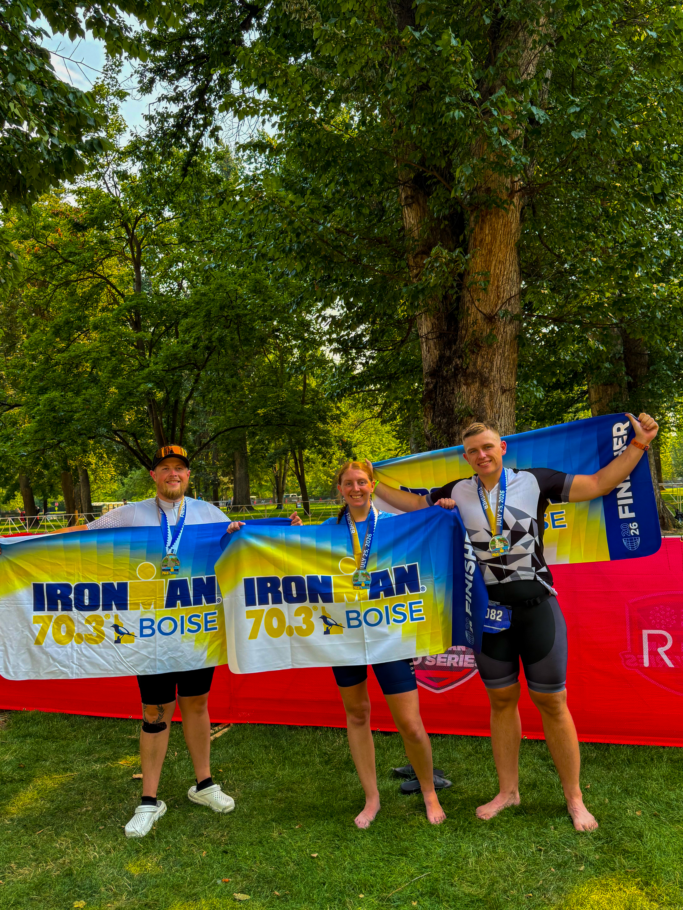

Road to Ironman 70.3 Boise

Marathon
This is my story for how I crossed the finish line of Ironman 70.3 Boise. Nobody just wakes up and says yeah I want to do an ironman, but one day I did. Due to personal trials in life I turned to endurance sports as a coping mechanism. I had already lost 100lbs from wanting to better my life but he gym wasnt stimulating enough, so I started running and it just snowballed from their. I started looking up races and started training for my first half marathon. The antelope island half marathon, after finishing that race, I was addicted and immidiatly wanted to get another race on the calendar. I signed up for the SLC half marathon and the Ogdden Full Marathon.
My Brother was also starting to get into endurance sports and suggested we train for an Ironman jokingly. But we both just kind said "well why not" We we already running so lets add swimming and biking to the mix. I bought my bike and started mixing in bike rides and and fell in love again with something new. We paid the ridiculous price to participate and from their we got busy.
I ran the SLC half marathon at a personal best and a month later ran the ogden marathon. I definetly didnt train well enough for it. I blew up at mile 15 and had 9 more miles of agonizing hip flexor pain. What was supposed to be a 4:30 finish turned into a 6:03 finish. But it was a learning opportunity better educate myself with a better training plan.
Here comes July and its race month, I have prepared all I can. There is nothing more I can do after 7 months of training, all while trying to get a degree and be enrolled in spring and summer semester.
The Morning and the canceled swim
Unfortunatley the swim was cancelled due to unsafe conditions, this announcement came as we were 15 minutes from the swim starting. I was already in my wetsuit prepared. I had to strip out of it and get my cyling gear on. What was a triathalon became a duathalon. The start of Boise became a rolling bike start.

The Bike
From here we started our 56 mile bike ride from lucky peak towards the winding backroad and eventually downtown. My bike was strong and I finished in 3:14. Coming into the ironman village was a surreal moment I fuled like I had trained and I did not blow up my stomach or legs. I felt strong getting off the bike but man was I in for a rude awakening when I started the run.

The Run
Here we are the last leg of our now duathalon, I had just rode 56 miles and now need to run 13.1 miles in the blistering boise july heat. I underestimated my potasium and sodium intake drastically. After about 2 miles into the run I started cramping HARD. My thighs would not stop cramping and this slowed me down drastically, and with now walking and being in the heat longer my sweat loss also ramped up. At every aid station I downed water and Coca Cola, I could barley stomach the water at this point, as my stomach blew up. From ther on coca cola was the only thing I could stomach comfortably. While I was also Trying to down salt stick and bannana slices. The damage was already done, and I had to keep moving.

The Finish Line
My personal best half marathon is 2:15, this half marathon took around 3:33. But as I turned the corner to the red carpet and the finish line, I knew I could finish and cross that finish line. At a total time of 6:37 I completed my first Ironman 70.3. This one was special months of hard work just paid off, and I can join a less than 1% catagory. But once again I knew I had to get another race on the calendar, this time its the big boy and one of the longest running ironman races in the world. Next on the list is Ironman Wisconsin. I knew I was gonna be busy with school and needed more time to train for that so I will be running that race in 2027. Training for that race will include races but practice events like the Ogden marathon again, Boise 70.3 and newly announced Utah 70.3 to prepare.
